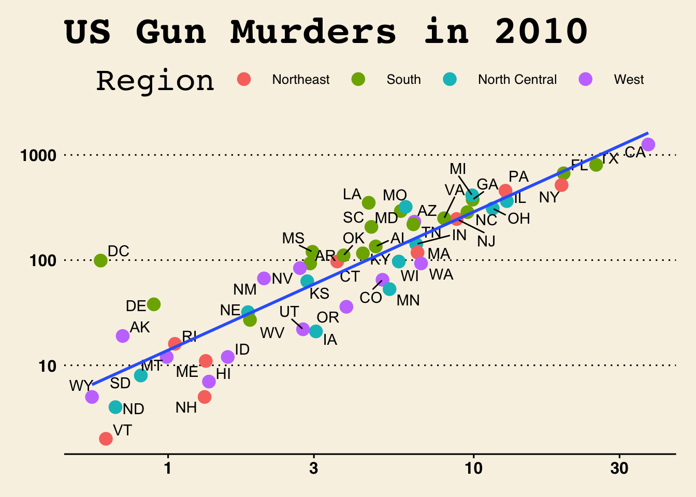

Code
# loading packages
library(tidyverse)
library(knitr)
library(ggthemes)
library(ggrepel)
library(dslabs)An unsupervised learning algorithm.
Unsupervised machine learning is a type of algorithm that works on detecting patterns from a dataset when outcomes are not known or labeled. In unsupervised learning models it is not possible to train the algorithm the way we would normally do in case of supervised learning. This is because the data is neither classified nor labeled and allows the algorithm to act on the information without supervision. An unsupervised algorithm works on discovering the underlying hidden structure, pattern or association of the data and that helps the model in clustering or grouping the data without any human intervention.
The main goal of this paper is to discuss the concept and underlying methodology of one the unsupervised algorithm called K-Means clustering. We will also discuss how K-Means can be leveraged in real time applications like customer segmentation (Yulin 2020). In this paper, we will also be discussing various limitations and bottlenecks of K-Means clustering algorithm and would suggest some improved algorithms to overcome these limitations.
K-means clustering is used for grouping similar observations together by minimizing the Euclidean distance between them. It uses “centroids”. Initially, it randomly chooses K different points in the data and assigns every data point to their nearest centroid. Once all of them are assigned, it moves the centroid to the average of points assigned to it. When the assigned centroid stops changing, we get the converged data points in separate clusters.
There are some limitations of K-means clustering. It can be difficult to determine an appropriate initial K-value, especially with large and multidimensional datasets. The algorithm is sensitive to the initial centroid values and may fall into the local optimum solution. K-mean clustering typically classifies spherically shaped data well, but is less successful at classifying irregularly shaped data.
Customer segmentation helps divide customers into different groups based on their common set of characteristics (like age, gender, spending habit, credit score, etc.) that helps in targeting those customers for marketing purposes.
The common non-parametric regression model is \(Y_i = m(X_i) + \varepsilon_i\), where \(Y_i\) can be defined as the sum of the regression function value \(m(x)\) for \(X_i\). Here \(m(x)\) is unknown and \(\varepsilon_i\) some errors. With the help of this definition, we can create the estimation for local averaging i.e. \(m(x)\) can be estimated with the product of \(Y_i\) average and \(X_i\) is near to \(x\). In other words, this means that we are discovering the line through the data points with the help of surrounding data points. The estimation formula is printed below (R-base?):
\[ M_n(x) = \sum_{i=1}^{n} W_n (X_i) Y_i \tag{1} \] \(W_n(x)\) is the sum of weights that belongs to all real numbers. Weights are positive numbers and small if \(X_i\) is far from \(x\).
A study was conducted to determine how…
# loading packages
library(tidyverse)
library(knitr)
library(ggthemes)
library(ggrepel)
library(dslabs)# Load Data
kable(head(murders))| state | abb | region | population | total |
|---|---|---|---|---|
| Alabama | AL | South | 4779736 | 135 |
| Alaska | AK | West | 710231 | 19 |
| Arizona | AZ | West | 6392017 | 232 |
| Arkansas | AR | South | 2915918 | 93 |
| California | CA | West | 37253956 | 1257 |
| Colorado | CO | West | 5029196 | 65 |
ggplot1 = murders %>% ggplot(mapping = aes(x=population/10^6, y=total))
ggplot1 + geom_point(aes(col=region), size = 4) +
geom_text_repel(aes(label=abb)) +
scale_x_log10() +
scale_y_log10() +
geom_smooth(formula = "y~x", method=lm,se = F)+
xlab("Populations in millions (log10 scale)") +
ylab("Total number of murders (log10 scale)") +
ggtitle("US Gun Murders in 2010") +
scale_color_discrete(name = "Region")+
theme_wsj()